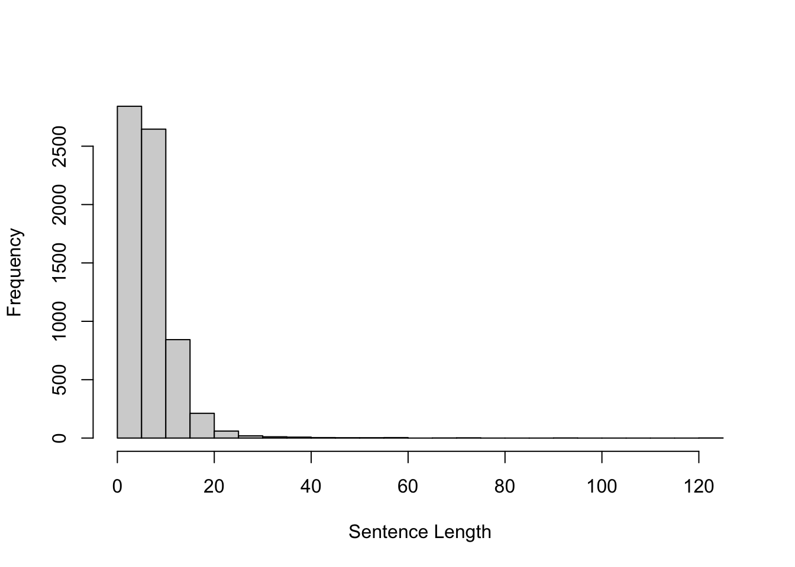

Assignment 1: Report
Abstract
Introduction
The aim of this assignment is to ‘predict the president’, to build predictive models that take in a sentence of text from a speech and predict which South African president said it. The data set given is a collection of 36 State of the Nation Addresses (SONA) in South Africa, delivered between 1994 and 2022. The assignment focuses on text mining and manipulation as well as predictive models, particularly focusing on neural networks and their classification performance. Before unpacking the data, a brief literature review is first given. Following this the data cleaning and exploration will be detailed and key features of the data discussed. The methods to format the data as well as the training, validation and test data splits will be outlined. The methods used to construct the different predictive models will then be detailed. Following this, results of the different predictive models will be presented and discussed and final conclusions made.
Literature Review
A brief summary of the literature on text classification techniques is now presented.
Data Cleaning, Tokenization, and Exploration
The data that is used in this particular problem are the State of the Nation Addresses in South Africa from 1994 to 2022. There a 36 speeches given by 6 different presidents, namely Mandela, de Klerk, Mbkei, Zuma, Motlanthe and Ramaphosa. The initial steps in the solving the predict the president problem is to break the speeches up into their individual sentences and remove any unwanted characters, numbers or punctuation marks. The speeches were tokenized, broken up into smaller parts, using the unnest_tokens function in R. Each speech was split up into its sentences and the new data structure included the sentence along with the president who said it. For modelling purposes the sentences need to be only made up of their words so that when each sentence is tokenized into words, punctuation marks and numbers are not recognized as individual words. In order to do this the str_replace_all() function in the stringr package was used in order to remove any unwanted characters which were specified using a regular expression (regex). Number, commas, question marks and exclamation marks are some examples of the characters that were removed from analysis.
Some exploration is required to check how imbalanced the classes are in terms of how many sentences are linked with each president. Table 1 below indicates the number of sentences associated with each president. It is clear that de Klerk and Motlanthe have much fewer associated sentences, this is expected as each of them only delivered one speech. Because of this large discrepancy in number of sentences, de Klerk and Motlanthe are removed from the analysis. The remaining four classes are still imbalanced with Mandela having the fewest sentences with 1665. To account for this all classes are made to have 1665 sentences and this is done by sampling without replacement 1665 sentences from the remaining three presidents: Mbeki, Zuma and Ramaphosa.
Table 1: Number of sentences by each president.
| de Klerk | Mandela | Mbeki | Motlanthe | Ramaphosa | Zuma |
|---|---|---|---|---|---|
| 97 | 1665 | 2419 | 266 | 2286 | 2656 |
Having split the speeches up into sentences and removed the unwanted characters and balancing the number of sentences per president, each sentence could then be tokenized into its individual words. The sentences need to be broken down into words in order to create bag of words data structures which will be used in the predictive models.
Again the unnest_tokens() function is used to break the sentences up into words where each word is now associated with a president and sentence number in order to keep track of which words belong in which sentences and who said them.
Because many of the presidents all use common words throughout their speeches, these words need to be removed from the analysis because they do not help one to differentiate one president from another. These words are referred to as stop words and include words such as: the, and, if, them, etc. A stop_words dictionary exists which was used to remove these words from the analysis.
Joining with `by = join_by(word)`
Joining with `by = join_by(sentence_ID)`We can consider the top words each presidents says as this will likely be used as one of the input data structures. Figure 1 displays the top 10 words said by each president. From this it is clear that there is significant overlap between presidents with words such as government, south and people being said by all presidents. There are however some words that are said many times by each president that do not appear in other presidents top 10 words. For example Zuma says compatriots many times and Ramaphosa refers frequently to the economy while others do not do so as frequently. These differences in the frequent words may be useful when deciding on the different data input structures to use in the predictive models.

Data Input Structures
The text data needs to be put into a specific format for the predictive models for which we use a bag of words with counts and TFIDF values. In a bag of words model a document (in this case working with sentences) is represented by the set of words used in it (REFERENCE). In this case each row of the bag of words data frame represents a sentence where the columns are the possible words used. The number of columns is very large because all words used by all presidents, excluding the stop words or other words ‘cleaned away’, are represented on the columns. The matrix is relatively sparse in that for each row (sentence) only a couple columns have values due to only a few words being used in each sentence. The values are counts of how many times each word was used in each sentence. This format is the first type of input data structure use in the predictive models.
The second input structure used in the predictive models is similar in format to the above except that instead of the values being counts of each word in each sentence, the value is a TFIDF value. A TFIDF (Term-frequency-inverse-document-frequency) value is a way of distinguishing which words are more or less ‘important’ in the delivered speeches. This value is made up of two calculations:
The term frequency (tf) which is the number of times a specific terms appears in a document, divided by the number of terms in that document.
The inverse document frequency (idf) which is a measure of how many documents contain the specific terms and is calculated as the log of the total number of documents divided by the number of documents containing the specific word.
The TFIDF value for a word is the product of the tf and idf measures. This data structure thus contains all the words as columns, the sentences as the rows (made up of different words) and the values in each cell are the TFIDF values. This data input structure may be more beneficial than the bag of words counts because it gives more information in terms of the relative importance or significance of the different words used in different sentences.
An additional way of varying the input structure which also helps reduce the dimensions of input data is to use only the top 200 most frequent words used by each president. This will help see if using more frequently used words helps better identify which president is speaking. As seen in the initial data exploration of each presidents top 10 words, there may however be significant overlap in each presidents most frequently used words and so this may not be an effective way of improving the predictions. However there maybe be unique words that each president says often that help differentiate them from one another. The top 200 words format is similar to the bag of words format in that the columns are words that make up each presidents most repeated words and the rows represent the sentences. Both counts and TFIDF scores will be used in the 200 top words data input format.
The above differing formats result in four different types of format of input data, two are what will be referred to as ‘all words’ formats which contain all the words except for those removed in cleaning. The one ‘all words’ format uses counts of word so form a bag of words model and the other ‘all words’ format uses TFIDF scores. The two ‘200 words’ input formats refer to those inputs that use only the top 200 most repeated words from each president. Again, one of these uses word counts and the other uses TFIDF values.
Joining with `by = join_by(sentence_ID)`
Joining with `by = join_by(sentence_ID)`Training, Validation and Test Splits
Having constructed the required data formats for the predictive model, the data must be split into training, validation and test sets before the predictive models are built. The split that will be used here is 60% training, 30% validation and 10% test data. The data splits are done grouping by president so that the classes of each president are balance in training , validation and test sets.
The seed was set to 2023 to ensure reproducibility. The training, validation and test sets were created by sampling from the sentence_ID variable and using this along with the anti_join() function to create the associated training, validation and test set vector of indices. For the different data formats, eg bag of words with counts versus TFIDF, the training data was created by selecting those rows where the sentence_ID variable matches those IDs in the training set vector of indices.
The training set will be used to build the different predictive models. The validation set will be used to select which hyper-parameters or model configuration to use. The test set will provide a final measure of performance of the selected model.
Joining with `by = join_by(sentence_ID)`
Joining with `by = join_by(sentence_ID)`Methods
Having outlined the various data input structures that will be considered in the models as well as how the data has been split into its training, validation and testing classes, the predictive models that are used are now outlined and methods to implement them explained.
Classification Tree
The first predictive model applied to the data is a simple classification tree. A classification tree is a decision tree that parititions the data on different variables in order to categorize each observation into a class. In this case a classification tree would take a sentence and based on the word counts or TFIDF counts, classify the sentence as being from one of the four presidents.
A classification tree was fit using the rpart() function in R. Four models were fit, one on each of the four training data sets which are the full bag-of-words counts data, the full TFIDF data, the top 200 bag of words count data and the top 200 TFIDF data. The ‘method’ argument was set to ‘class’ because the response is categorical. The remaining arguments of the rpart() function were left at the default settings. For the classification tree model, no tuning was performed.
Boosting - Tree Based Method
The second predictive model that was fit was boosted trees. This is an ensemble learning method and follows on from a simple classification tree. The boosting algorithm iteratively builds decision trees where each subsequent tree learns from previous trees mistakes and so the model gradually improves.
To fit the boosted tree the gbm() function from the gbm package was used in R. The formula was the same as in the case of the classfication tree, predicting the president based on the bag of words and TFIDF data. For the input data structures that used only the top 200 words of each president, the number of trees was set to 500. However the input data structure with all words was much larger and took much longer to fit and so only 10 trees were used for this large data set. The interaction.depth was set to 2, shrinkage to 0.01 and bag.fraction to 1 for all models. The remaining parameters were left at the default settings.
Feed-Forward Neural Network
A standard feed-forward neural network was fit to the different data types to predict the president who delivered the sentence. Here a number of different configurations of neural networks, with different numbers of layers and nodes were constructed and the validation set used to select the best model.
There are many architectures, or configurations, that can be done by varying the number of layers in the network, number of nodes per layers and other parameters such as learning rate and activation functions. The selection or ‘tuning’ of these parameters is done manually by fitting 3 different neural networks using the training data and selecting the optimal architecture based on the validation set performance. The differing configurations will be fit on the four different input data structures.
The keras package was used to train and fit the neural networks, making use of the keras_model_sequential(), compile() and fit() functions as well as various functions used to specify hidden layers, output layers and dropout.
There were a number of parameters that were common across all 3 network architectures. The output layer for all networks had 4 nodes, corresponding to the one-hot encoding of the 4 presidents. The activation function on the output layer was set to “softmax” due to the categorical nature of the response variable. The “adam” optimizer was used and categorical crossentropy specified as the error measure. In terms of fitting the model with the fit() function in keras, 30 epochs over the data were done and the batch size was set to 200 observations.
The differences in the configurations considered were the following:
Neural Network 1: The first neural network was the ‘simplest’ model out of the three. This model had 1 hidden layer containing 50 nodes. The “Relu” activation function was specified on the hidden layer.
Neural Network 2: The second network contained 3 hidden layers with 50, 10 and 5 nodes per layer respectively. “tanh” activation functions were used on each of these hidden layers.
Neural Network 3: The third network contained 2 hidden layers with a dropout layer between the 2 hidden layers. The first layer contained 500 nodes while the second hidden layer contained 20 nodes. The dropout layer was between these two layers and a rate of 0.25 was specified.
These models were fit to the data input structures with all words, which had an input argument in the first layer specified at 9085 because there were 9085 columns in the bag of words data input structure. When fitting these models to the bag of words for only the top 200 words per president this input argument for the first layer was set to 378, the number of columns in that data input structure.
Convolutional Neural Network
The final predictive model considered for this problem is a convolutional neural network. A convolutional neural network is a more advanced model than a standard neural network and makes use of convolution and pooling isteps n order to fit the model. This type of model is usually suited to problems such as image classification as the convolutional layers make use of filters which can ‘summarize’ the data in that way extract key features.
The convolutional neural network required a slightly different input format to the four data structure formats used above. For the CNNs, word embeddings are used to represent the speech sentences more directly, instead of using the bag of words format as before. Word embeddings are a way of representing words as numbers which are then fed into the model. This is done using the text_tokenizer() and texts_to_sequences() functions in R which populate the new data in terms of the embeddings. The maximum length is set to 15 which makes all sentence of length 15 and pads those sentences that are too short using the pad_sequences() function. Once sentences have been transformed in this way they can be used in the CNN model. Hence for this predictive model only one format of input data is being tested. The training, validation and test data sets still represent the same sentences as before but embedding makes them look different.
Two different architectures of convolutional neural network were fitted to the data in order to make predictions. The first layer of both networks is an embedding layer which is required as a result of the word embedding for the data. The last layer, as in the case of the feed forward neural network, is a layer with 4 nodes and a “softmax” activation function. The remaining network specifications are as follows:
CNN 1: Following the first layer a dropout layer is specified with a rate of 0.2. A convolutional layer is then specified with 64 filters with kernel_size set to 8 and “relu” activation used. A pooling layer with a pool_size of 2 is then specified. After flattening, a ‘normal’ hidden layer with 300 nodes and “relu” activation is specified.
CCN 2: Following the first layer a dropout layer with a rate of 0.1 is specified. A convolutional layer with 36 filters and a kernel_size set to 6 is then specified, with a “tanh” activation function. The pooling layer is the same as CCN 1 with a pool_size of 2. The final hidden layer, after flattening, has 100 hidden nodes and a “tanh” activation function.
Results
Having outlined the methods and models implemented, the results of these models are now given. For each of the models, where apllicable, the classification accuracy of the models are given in terms of the validation data set. If different configurations of the models have been presented the model with the best validation accuracy is selected and the test set then applied to this model to obtain a final measure of classification accuracy.
Classification Tree
The results of the classification tree fit to the four different data input structures is given in Table 2 below. This table specifies the classification accuracy for both training and test sets. The validation set was not used here because no tuning was performed so no ‘best’ model was required to be selected. From the results it is clear that the classification tree does very poorly at classifying which president said each sentence with the model only being a slight improvement from one just randomly choosing a president (25%). The classification tree performs badly on all four data input structures and for this model the different input structures to do not improve the accuracy significantly.
## Classification Tree Results:
## CT 1 - All Words - BoW Counts
training_all_BAG = cbind(Y_train_all_BAG, X_train_all_BAG)
fit_all_BAG <- rpart(Y_train_all_BAG ~ ., training_all_BAG, method = 'class')
#plot(fit_all_BAG, main = 'Full Classification Tree')
#text(fit_all_BAG, use.n = TRUE, all = TRUE, cex=.8)
fittedtrain <- predict(fit_all_BAG, type = 'class')
predtrain <- table(training_all_BAG$Y_train_all_BAG, fittedtrain)
predtrain fittedtrain
Mandela Mbeki Ramaphosa Zuma
Mandela 0 31 961 0
Mbeki 0 77 934 2
Ramaphosa 0 1 982 0
Zuma 0 8 919 55accuracy_all_BAG_train = round(sum(diag(predtrain))/sum(predtrain), 3) # training accuracy
fittedtest <- predict(fit_all_BAG, newdata = cbind(Y_test_all_BAG, X_test_all_BAG), type = 'class')
predtest <- table(Y_test_all_BAG, fittedtest)
predtest fittedtest
Y_test_all_BAG Mandela Mbeki Ramaphosa Zuma
Mandela 0 7 162 0
Mbeki 0 15 151 0
Ramaphosa 0 0 160 0
Zuma 0 5 153 9accuracy_all_BAG_test = round(sum(diag(predtest))/sum(predtest), 3) # test accuracy
## CT 2 - All Words - TFIDF
training_all_TFIDF = cbind(Y_train_all_tfidf, X_train_all_tfidf)
fit_all_TFIDF <- rpart(Y_train_all_tfidf ~ ., training_all_TFIDF, method = 'class')
#plot(fit_all_BAG, main = 'Full Classification Tree')
#text(fit_all_BAG, use.n = TRUE, all = TRUE, cex=.8)
fittedtrain <- predict(fit_all_TFIDF, type = 'class')
predtrain <- table(training_all_TFIDF$Y_train_all_tfidf, fittedtrain)
predtrain fittedtrain
Mandela Mbeki Ramaphosa Zuma
Mandela 0 31 961 0
Mbeki 0 77 934 2
Ramaphosa 0 1 982 0
Zuma 0 8 919 55accuracy_all_TFIDF_train = round(sum(diag(predtrain))/sum(predtrain), 3) # training accuracy
fittedtest <- predict(fit_all_TFIDF, newdata = cbind(Y_test_all_tfidf, X_test_all_tfidf), type = 'class')
predtest <- table(Y_test_all_tfidf, fittedtest)
predtest fittedtest
Y_test_all_tfidf Mandela Mbeki Ramaphosa Zuma
Mandela 0 7 162 0
Mbeki 0 15 151 0
Ramaphosa 0 0 160 0
Zuma 0 5 153 9accuracy_all_TFIDF_test = round(sum(diag(predtest))/sum(predtest), 3) # test accuracy
## CT 3 - 200 Words - BoW Counts
training_200_BAG = cbind(Y_train_200_BAG, X_train_200_BAG)
fit_200_BAG <- rpart(training_200_BAG$Y_train_200_BAG ~ ., data = training_200_BAG, method = 'class')
plot(fit_200_BAG, main = 'Full Classification Tree')
text(fit_200_BAG, use.n = TRUE, all = TRUE, cex=.8)
fittedtrain <- predict(fit_200_BAG, newdata = cbind(Y_train_200_BAG, X_train_200_BAG), type = 'class')
predtrain <- table(training_200_BAG$Y_train_200_BAG, fittedtrain)
predtrain fittedtrain
Mandela Mbeki Ramaphosa Zuma
Mandela 0 31 900 0
Mbeki 0 77 893 2
Ramaphosa 0 1 934 0
Zuma 0 8 848 55accuracy_200_BAG_train = round(sum(diag(predtrain))/sum(predtrain), 3) # training accuracy
fittedtest <- predict(fit_200_BAG, newdata = cbind(Y_test_200_BAG, X_test_200_BAG), type = 'class')
predtest <- table(Y_test_200_BAG, fittedtest)
predtest fittedtest
Y_test_200_BAG Mandela Mbeki Ramaphosa Zuma
Mandela 0 7 156 0
Mbeki 0 15 141 0
Ramaphosa 0 0 150 0
Zuma 0 5 145 9accuracy_200_BAG_test = round(sum(diag(predtest))/sum(predtest), 3) # test accuracy
## CT 4 - 200 Words - TFIDF
training_200_TFIDF = cbind(Y_train_200_tfidf, X_train_200_tfidf)
fit_200_TFIDF <- rpart(Y_train_200_tfidf ~ ., training_200_TFIDF, method = 'class')
plot(fit_200_TFIDF, main = 'Full Classification Tree')
text(fit_200_TFIDF, use.n = TRUE, all = TRUE, cex=.8)
fittedtrain <- predict(fit_200_TFIDF, newdata = cbind(Y_train_200_tfidf, X_train_200_tfidf), type = 'class')
predtrain <- table(training_200_TFIDF$Y_train_200_tfidf, fittedtrain)
predtrain fittedtrain
Mandela Mbeki Ramaphosa Zuma
Mandela 0 31 900 0
Mbeki 0 77 893 2
Ramaphosa 0 1 934 0
Zuma 0 8 848 55accuracy_200_TFIDF_train = round(sum(diag(predtrain))/sum(predtrain), 3) # training accuracy
fittedtest <- predict(fit_200_TFIDF, newdata = cbind(Y_test_all_tfidf, X_test_all_tfidf), type = 'class')
predtest <- table(Y_test_200_tfidf, fittedtest)
predtest fittedtest
Y_test_200_tfidf Mandela Mbeki Ramaphosa Zuma
Mandela 0 7 156 0
Mbeki 0 14 142 0
Ramaphosa 0 1 149 0
Zuma 0 4 148 7accuracy_200_TFIDF_test = round(sum(diag(predtest))/sum(predtest), 3) # test accuracy Table 2: Classification Accuracy of Simple Classification Tree
| Data Input Structure | All BOW Counts | All TFIDF | 200 Words Counts | 200 Words TFIDF |
|---|---|---|---|---|
| Training Classification Accuracy | 0.281 | 0.281 | 0.284 | 0.284 |
| Test Classification Accuracy | 0.278 | 0.278 | 0.277 | 0.271 |
Boosted Trees
The boosted tree model was also applied to all four data input structures as above, however the model for the larger data input structures was varied slight for computational reasons. Table 3 below gives the validation data set classification accuracy for the four different boosted tree models.
Distribution not specified, assuming multinomial ...Distribution not specified, assuming multinomial ...Distribution not specified, assuming multinomial ...Distribution not specified, assuming multinomial ...Table 3: Classification Accuracy of Boosted Trees
| Data Input Structure | All BOW Counts | All TFIDF | 200 Words Counts | 200 Words TFIDF |
|---|---|---|---|---|
| Validation Classification Accuracy | 0.308 | 0.304 | 0.438 | 0.447 |
From the above table it is clear that the models that made use of the most common words (top 200 from each president) performed significantly better than those that use all words. This however was expected because the number of trees used in these models was much much larger which gave the model more tree to learn from. While the model using all words did not perform particularly well, with a classification accuracy of around on 30%, this is an improvement from the simple classification tree and is slightly better than the naive approach of guessing a president (25%).
Using 500 trees...The best performing boosted tree model of the four is the top 200 words per president in the TFIDF format, with a classification accuracy of 0.447. Applying the test set to this model, one obtains a classification accuracy of 0.435. This is the final classification accuracy from the best model of the boosted trees predictive model. While this is not a good classification accuracy, it is better than the naive model by around 20%.
Feed-Forward Neural Network
The third predictive model used for this problem was the standard feed-forward neural network. As discussed in the methods section, three different architectures of networks were tested here on the four different data input structures. Table 4 below gives the validation data set classification accuracy for the different network architectures for the different data input structures.
Model: "sequential"
________________________________________________________________________________
Layer (type) Output Shape Param #
================================================================================
dense_1 (Dense) (None, 50) 454300
dense (Dense) (None, 4) 204
================================================================================
Total params: 454504 (1.73 MB)
Trainable params: 454504 (1.73 MB)
Non-trainable params: 0 (0.00 Byte)
________________________________________________________________________________10/10 - 0s - loss: 1.3663 - accuracy: 0.5607 - 71ms/epoch - 7ms/step10/10 - 0s - loss: 2.2444 - accuracy: 0.5390 - 64ms/epoch - 6ms/stepModel: "sequential_1"
________________________________________________________________________________
Layer (type) Output Shape Param #
================================================================================
dense_5 (Dense) (None, 50) 454300
dense_4 (Dense) (None, 10) 510
dense_3 (Dense) (None, 5) 55
dense_2 (Dense) (None, 4) 24
================================================================================
Total params: 454889 (1.74 MB)
Trainable params: 454889 (1.74 MB)
Non-trainable params: 0 (0.00 Byte)
________________________________________________________________________________10/10 - 0s - loss: 1.4498 - accuracy: 0.5280 - 67ms/epoch - 7ms/step10/10 - 0s - loss: 1.9091 - accuracy: 0.5108 - 70ms/epoch - 7ms/stepModel: "sequential_2"
________________________________________________________________________________
Layer (type) Output Shape Param #
================================================================================
dense_8 (Dense) (None, 500) 4543000
dropout (Dropout) (None, 500) 0
dense_7 (Dense) (None, 20) 10020
dense_6 (Dense) (None, 4) 84
================================================================================
Total params: 4553104 (17.37 MB)
Trainable params: 4553104 (17.37 MB)
Non-trainable params: 0 (0.00 Byte)
________________________________________________________________________________10/10 - 0s - loss: 2.0155 - accuracy: 0.5567 - 113ms/epoch - 11ms/step10/10 - 0s - loss: 3.3024 - accuracy: 0.5385 - 116ms/epoch - 12ms/stepModel: "sequential_3"
________________________________________________________________________________
Layer (type) Output Shape Param #
================================================================================
dense_10 (Dense) (None, 50) 18950
dense_9 (Dense) (None, 4) 204
================================================================================
Total params: 19154 (74.82 KB)
Trainable params: 19154 (74.82 KB)
Non-trainable params: 0 (0.00 Byte)
________________________________________________________________________________
10/10 - 0s - loss: nan - accuracy: 0.4438 - 52ms/epoch - 5ms/step
10/10 - 0s - loss: 1.2166 - accuracy: 0.4907 - 51ms/epoch - 5ms/stepModel: "sequential_4"
________________________________________________________________________________
Layer (type) Output Shape Param #
================================================================================
dense_14 (Dense) (None, 50) 18950
dense_13 (Dense) (None, 10) 510
dense_12 (Dense) (None, 5) 55
dense_11 (Dense) (None, 4) 24
================================================================================
Total params: 19539 (76.32 KB)
Trainable params: 19539 (76.32 KB)
Non-trainable params: 0 (0.00 Byte)
________________________________________________________________________________10/10 - 0s - loss: nan - accuracy: 0.4524 - 55ms/epoch - 6ms/step
10/10 - 0s - loss: 1.3549 - accuracy: 0.4504 - 56ms/epoch - 6ms/stepModel: "sequential_5"
________________________________________________________________________________
Layer (type) Output Shape Param #
================================================================================
dense_17 (Dense) (None, 500) 189500
dropout_1 (Dropout) (None, 500) 0
dense_16 (Dense) (None, 20) 10020
dense_15 (Dense) (None, 4) 84
================================================================================
Total params: 199604 (779.70 KB)
Trainable params: 199604 (779.70 KB)
Non-trainable params: 0 (0.00 Byte)
________________________________________________________________________________
10/10 - 0s - loss: nan - accuracy: 0.4635 - 57ms/epoch - 6ms/step10/10 - 0s - loss: nan - accuracy: 0.4504 - 14ms/epoch - 1ms/stepTable 4: Validation Set Classification Accuracy of Neural Networks
| Data Input Structure | All BOW Counts | All TFIDF | 200 Words Counts | 200 Words TFIDF |
|---|---|---|---|---|
| NN1 Validation Classification Accuracy | 0.5390428 | 0.5607053 | 0.4906801 | 0.4438287 |
| NN2 Validation Classification Accuracy | 0.5108312 | 0.5279597 | 0.4503778 | 0.4523929 |
| NN3 Validation Classification Accuracy | 0.5385391 | 0.5566751 | 0.4503778 | 0.4634761 |
An improvement is seen for these neural network classification models from the boosted tree models with the models using all words having over 50% classification accuracy. In general the neural networks that use all words perform better at classifying the presidents than the models which use only the top 200 words used by each president. Comparing both input structure that use all words, it can be seen that the TFIDF input structure performs slightly better than the standard counts bag of words input data structure. In terms of the three different network architectures the best network architecture depends on the input data structure used. For the BOW counts data, the NN1 and NN3 have almost the same accuracy with NN2 slightly lower. For the TFIDF data, the simplest neural network performs the best with a classification accuracy of 0.5607053. The model NN1, with TFIDF data has the highest validation set accuracy and so is selected as the best model.
model1 <- keras_model_sequential() %>%
layer_dense(units = 50, input_shape = c(9085), activation = "relu") %>%
layer_dense(units = 4, activation = "softmax")
#summary(model1)
model1 %>% compile(
loss = "categorical_crossentropy",
optimizer = "adam",
metrics = "accuracy"
)
history1.1 <- model1 %>% fit(X_train_all_tfidf, Y_train, epochs = 30, batch_size = 200, verbose = 0)
#plot(history1.1)
results_test <- model1 %>% evaluate(X_test_all_tfidf, Y_test, batch_size=200, verbose = 0)The test data set is applied to this model to obtain a final prediction accuracy. The classification accuracy on the test data, using TFIDF input and NN1 is 0.5694864 . While this is not a very good classification accuracy it is much better than the naive classification approach (25%) and is fairly good in terms of the accuracy seen in other models so far.
Convolutional Neural Network
The final predictive method that was considered for the predict-the-president problem was a convolutional neural network. As already discussed in the methods section, this predictive model took in a different format of the data by using word embeddings for each of the sentences instead of the bag of words model of input data. Two different architectures were used here as outlined in the methods. Table 5 below summarizes the results of the two methods.
[1] "south african society - in its schools and universities, in the work-place, in sports, in professional work and all areas of social interaction - needs to infuse itself with a measure of discipline, a work ethic and responsibility for the actions we undertake"[[1]]
[1] 7 8 9 1 10 11 2 12 1 4 3 13 1 14 1 15 3 2 16 17 5 18 19 20 21
[26] 22 23 24 6 25 5 26 6 3 27 2 28 29 4 30 31 32$south
[1] 7
$african
[1] 8
$society
[1] 9
$`in`
[1] 1
$its
[1] 10
$schools
[1] 11
$and
[1] 2
$universities
[1] 12
$`in`
[1] 1
$the
[1] 4
$work
[1] 3
$place
[1] 13
$`in`
[1] 1
$sports
[1] 14
$`in`
[1] 1
$professional
[1] 15
$work
[1] 3
$and
[1] 2
$all
[1] 16
$areas
[1] 17
$of
[1] 5
$social
[1] 18
$interaction
[1] 19
$needs
[1] 20
$to
[1] 21
$infuse
[1] 22
$itself
[1] 23
$with
[1] 24
$a
[1] 6
$measure
[1] 25
$of
[1] 5
$discipline
[1] 26
$a
[1] 6
$work
[1] 3
$ethic
[1] 27
$and
[1] 2
$responsibility
[1] 28
$`for`
[1] 29
$the
[1] 4
$actions
[1] 30
$we
[1] 31
$undertake
[1] 32
Model: "sequential_7"
________________________________________________________________________________
Layer (type) Output Shape Param #
================================================================================
embedding (Embedding) (None, 15, 10) 10000
dropout_2 (Dropout) (None, 15, 10) 0
conv1d (Conv1D) (None, 8, 64) 5184
max_pooling1d (MaxPooling1D) (None, 4, 64) 0
flatten (Flatten) (None, 256) 0
dense_21 (Dense) (None, 300) 77100
dense_20 (Dense) (None, 4) 1204
================================================================================
Total params: 93488 (365.19 KB)
Trainable params: 93488 (365.19 KB)
Non-trainable params: 0 (0.00 Byte)
________________________________________________________________________________
10/10 - 0s - loss: 1.6236 - accuracy: 0.2469 - 64ms/epoch - 6ms/stepModel: "sequential_8"
________________________________________________________________________________
Layer (type) Output Shape Param #
================================================================================
embedding_1 (Embedding) (None, 15, 10) 10000
dropout_3 (Dropout) (None, 15, 10) 0
conv1d_1 (Conv1D) (None, 10, 36) 2196
max_pooling1d_1 (MaxPooling1D) (None, 5, 36) 0
flatten_1 (Flatten) (None, 180) 0
dense_23 (Dense) (None, 100) 18100
dense_22 (Dense) (None, 4) 404
================================================================================
Total params: 30700 (119.92 KB)
Trainable params: 30700 (119.92 KB)
Non-trainable params: 0 (0.00 Byte)
________________________________________________________________________________
10/10 - 0s - loss: 1.5457 - accuracy: 0.2408 - 62ms/epoch - 6ms/step4/4 - 0s - loss: 1.5515 - accuracy: 0.2538 - 10ms/epoch - 3ms/stepTable 5: Validation Set Classification Accuracy of CNN
| CNN 1 | CNN 2 | |
|---|---|---|
| Validation Classification Accuracy | 0.2468514 | 0.240806 |
It is clear that the convolutional neural network does not do well at predicting the correct classification with the validation accuracy being the same as a naive prediction guess would be. The test set accuracy for CNN2, which performs only marginally better, is: 0.2537764 which is very poor predictive performance.
Now lets try a cnn
max_features <- 1000 # choose max_features most popular words
tokenizer = text_tokenizer(num_words = max_features)
fit_text_tokenizer(tokenizer, sona_sentences_FINAL$sentences[4])
sona_sentences_FINAL$sentences[4]
tts <- texts_to_sequences(tokenizer, sona_sentences_FINAL$sentences[4])
tts
tokenizer$word_index[tts[[1]]]
sequences = tokenizer$texts_to_sequences(sona_sentences_FINAL$sentences)
train_row = train_ids$sentence_ID
val_row = val_ids$sentence_ID
y = as.factor(sona_sentences_FINAL$president_name)
y = as.integer(y)
train <- list()
val <- list()
train$x <- sequences[train_row]
val$x <- sequences[val_row]
train$y <- y[train_row]
val$y <- y[val_row]
hist(unlist(lapply(sequences, length)), main = "Sequence length after tokenization")
maxlen <- 15
x_train <- train$x %>% pad_sequences(maxlen = maxlen)
x_test <- val$x %>% pad_sequences(maxlen = maxlen)
model <- keras_model_sequential() %>%
layer_embedding(max_features, output_dim = 10, input_length = maxlen) %>%
layer_dropout(0.2) %>%
layer_flatten() %>%
layer_dense(100, activation = "relu") %>%
layer_dense(4, activation = "softmax")
summary(model)
model %>% compile(
loss = "categorical_crossentropy",
optimizer = "adam",
metrics = "accuracy"
)
history <- model %>% fit(x_train,Y_train,
batch_size = 600, epochs = 30, verbose = 0)
plot(history)embedding_dims <- 10
model <- keras_model_sequential() %>%
layer_embedding(max_features, output_dim = embedding_dims, input_length = maxlen) %>%
layer_dropout(0.2) %>%
layer_conv_1d(filters = 64, kernel_size = 8, activation = "relu") %>%
layer_max_pooling_1d(pool_size = 2) %>%
layer_flatten() %>%
layer_dense(300, activation = "relu") %>%
layer_dense(4, activation = "softmax")
summary(model)
model %>% compile(
loss = "categorical_crossentropy",
optimizer = "adam",
metrics = "accuracy"
)
history <- model %>% fit(x_train,Y_train,
batch_size = 600, epochs = 30, verbose = 0)
plot(history)
results <- model %>% evaluate(x_test, Y_val, batch_size=600, verbose = 2)